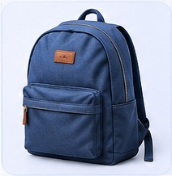
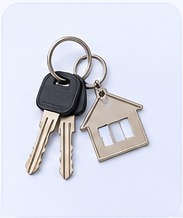

Found Item
Electronics
Your campus, connected. Discover lost and found belongings, report missing items and help reunite people with what matters.


* Sample demonstration metrics for prototype preview. Does not represent live security registry records.
A seamless, reliable flow connecting lost items back to their rightful owners on campus.
Report an item you lost or found. Fill out a simple form detailing item characteristics, category, and where it was misplaced or discovered.
Search through available campus reports. Browse our live dashboard with real-time filters for electronics, cards, keys, and campus buildings.
Submit an ownership claim and arrange verification. Provide matching proof securely to coordinate a safe handover through campus security.
Real-time glimpse into newly submitted lost and found reports across campus facilities.


Designed specifically for university campuses to streamline lost item recovery with trust, efficiency, and clarity.
One unified digital desk replaces scattered social media chats, informal messages, and physical bulletin notices across campus.
Rapid search filters by category, building quadrant, and status enable students and faculty to pinpoint matches in seconds.
Targeted verification questions protect claimant privacy and ensure surrendered property is handed over only to the rightful owner.
Fosters an active culture of campus honesty, accountability, and mutual assistance among students, staff, and faculty members.